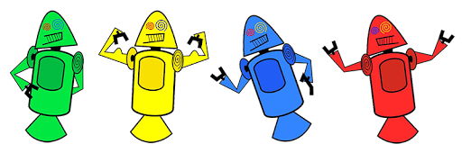

Provavelmente você sabe que o sistema operacional Android, mantido pela google é um dos mais utilizados para dispositivos móveis em todo o mundo. mas talvez você não saiba que seu simpático mascote tem um nome e historia muito curiosa? Pois acompanhe esse artigo para aprender muita coisa desse robozinho.
história do mascote do android
A primeira versão
a primeira tentativa de criar um mascote surgiu em 2007 e veio de um desenvolvedor chamado . ele conta que abriu o inkcape (software livre para vetorização de imagens) e criou a sua propria versão de robô. O objetivo era apenas personificar o sistema apenas para a sua equipe. Não existia nenhuma solicitação da empresa para criar o mascote.
surge um novo mascote
a ideia de ter um mascote foi amadurecendoo e a missão foi passada para uma profissional da area. A ilustradora Russa Irina Blok. Tambem funcionaria do google. ficou com a missão de representar o pequeno robo de uma maneira mais agradavel.

A ideia principal da Irina era representar tudo graficamente com poucos traços e de forma mais chapada. O desenho também deveria gerar identificação rápida com quem o olha. Surgiu então o Bugdroid, o novo mascote do Android.

A principal inspiração para os traços do novo Bugdroid veio daqueles bonequinhos que ilustram portas de banheiro para indicar o gênero de cada porta. Conta a lenda que a artista estava criando em sua mesa no escritório do Google e olhou para o lado dos banheiros e a identificação foi imediata: simples, limpo, objetivo.